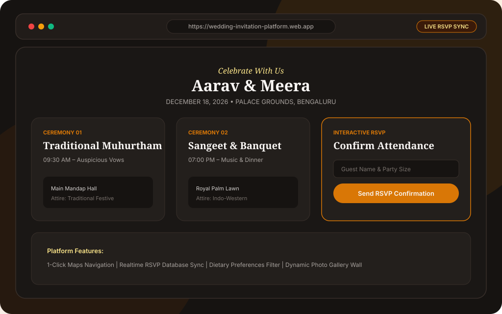

Wedding Platform: Bespoke Celebration & RSVP Engine
An interactive digital wedding celebration platform engineered for elegant guest experiences. Features real-time RSVP synchronization, dynamic multi-day itinerary scheduling, deep Google Maps venue navigation, and a collaborative digital guestbook.

Traditional paper invitations cost thousands, cannot update guests about venue changes in real time, and leave hosts chasing manual headcount spreadsheets.
Built an elegant responsive web platform with instant RSVP confirmations, calendar file integration (.ics), dynamic dietary tracking, and turn-by-turn navigation links.
Mobile-first CSS architecture optimized for frictionless touch interactions and fluid gesture animations.
Validates guest contact entries and posts structured payloads into cloud database tables with immediate host notifications.
Direct Google Maps URL generation allowing guests to launch one-tap native GPS navigation to ceremony sites.
Instant RSVP
Frictionless attendance and plus-one registration with instant confirmation feedback.
Turn-by-Turn GPS
Native map integration guiding traveling guests straight to parking and venue gates.
Multi-Event Itinerary
Detailed timeline of events with attire guides, ceremony hours, and calendar sync.
Designed for 100% responsive cross-device fidelity across all iOS and Android screen resolutions.
signal_wifi_bad Challenge: Weak Rural Connectivity at Venues
Remote wedding venues frequently suffer from intermittent 3G cellular service, causing guests to lose access to directions and schedule details.
smartphone Challenge: Varied Elderly Family Demographics
Elderly family members struggled with complex mobile inputs, ambiguous iconography, and small touchscreen tap targets.